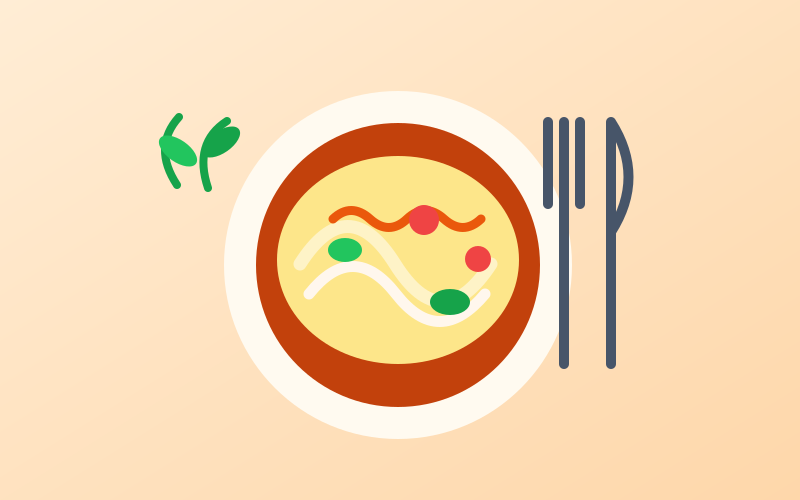

Âm nhạc
Mình thích nghe nhạc để thư giãn sau giờ học. Những giai điệu vui tươi giúp mình có thêm năng lượng, còn những bản nhạc nhẹ nhàng giúp mình tập trung hơn.
Khám phá thêm về mình
Đây là một vài điều mình yêu thích trong cuộc sống.
Mình thích nghe nhạc để thư giãn sau giờ học. Những giai điệu vui tươi giúp mình có thêm năng lượng, còn những bản nhạc nhẹ nhàng giúp mình tập trung hơn.
Mình thích cảm giác được tạm rời nhịp sống thường ngày, ngắm nhìn cảnh vật mới và tận hưởng không khí khác lạ. Mỗi chuyến đi giúp mình thư giãn, mở mang thêm điều mới và mang về những cảm xúc dễ chịu.

Mình thích thưởng thức các món ăn ngon, đặc biệt là những món đặc sản ở mỗi vùng miền. Mình cũng muốn thử học nấu thêm nhiều món mới.